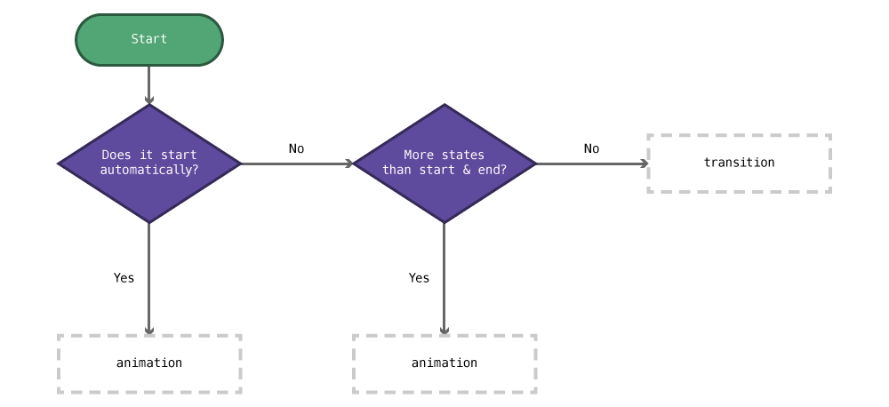
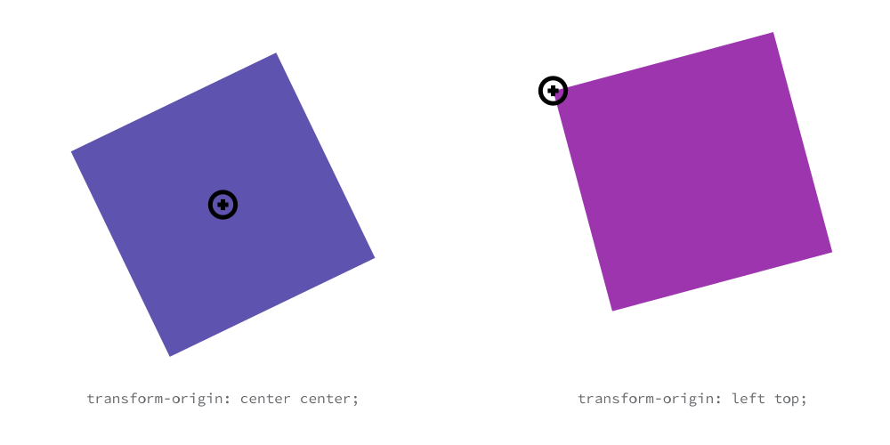

Different interaction methods for websites (without Javascript) and triggering animations and transitions with those interactions.
Choosing transitions or animations

- Does it start automatically, without user interaction?
Yes:
animation - More states and keyframes that just start & end?
Yes:
animationNo:transition
Transitions
Transitions are simple animations that have a start and an end style that the browser seamlessly animates between, e.g. fading between colours, animating the motion of a box, etc.
Think of a transition as, “making a property change over a period of time instead of instantly.”
- Just about any CSS number (font-size, width, height, top, colours, etc.) can be animated—with one major exception: linear-gradients.
- The transition CSS should always be added to the default CSS state, or there will be weird flashing when it’s triggered.
A basic transition example
Here’s a simple example that creates an animation between two colours when a link is hovered:
a {
color: orange;
transition: color 1000ms linear;
}
a:hover {
color: red;
}
The animation will affect the “color” property and last for “1000ms”, using the “linear”̦ timing function.
Transition syntax
transition: property length timing-function;
property— the CSS property that should be transitioned orallto transition all properties that changelength— how long the transition should take inms(milliseconds; where 1000 is 1 second) ors(seconds)timing-function— how the animation should functionlinear— all steps of the animation are equalease-in— the animation starts slowly and speeds up over timeease-out— the animation starts quickly and slows down over timeease-in-out— the animation starts slowly, speeds up, and slows down- refer to the links below for more timing functions
Optionally, at the end of the transition a delay can be added, this is how long the browser will wait before starting the transition.
Here’s an example with a delay:
transition: all 250ms linear 100ms;
Multiple different transitions
Different transitions can be applied to different properties of an element if, for example, you want background colour and border radius to transition over different periods of time.
The syntax for multiple transitions is the same, just separate each new transition with a comma.
.box {
background-color: green;
border-radius: 0;
/* It's easier to read if the different transitions are on individual lines */
transition:
background-color 250ms ease-out,
border-radius 1s ease-in-out
;
}
.box:hover {
background-color: pink;
border-radius: 40px;
}
Links
- MDN: Transition
- MDN: Timing function
- Can I Use: Transitions
- CSS Tricks: Transition
- All you need to know about CSS Transitions
- Hover.css
Target pseudo class
The :target pseudo class in CSS allows you to style an element when it is targeted by internal linking and the URL.
Say we have this URL:
https://example.ca/index.html#box
And this HTML:
<div id="box" class="box">Box!</div>
Notice how the hash in the URL is the same as the ID on the div—this is the same technique as internal linking.
But, we can now target that item in CSS like this:
.box:target {
background-color: #ffc;
}
Now box will be styled with a background colour whenever the URL matches it’s ID.
Links
Transforms
Transforms allow us to apply different alterations to HTML elements that change them in a specific way, e.g. rotate, scale, skew, move (translate), etc.
A basic transform example
.box {
transform: rotate(30deg);
}
The above CSS would rotate that HTML element 30 degrees.
Transform syntax
There’s a whole bunch of different functions to manipulate the elements:
-
rotate(angle)— rotates the element the specified angle; negative numbers can be usedtransform: rotate(30deg) transform: rotate(-15deg) -
translate(x, y)— moves the element horizontally and vertically; negative numbers okay; alsotranslateX(),translateY()transform: translate(200px, 0) /* moves right 200px, doesn’t move down */ -
scale(size)— grow or shrink the element; negative numbers okay; also:scaleX(),scaleY()transform: scale(1.5, 2) /* scale horizontal 1.5x and vertically 2x */ -
refer to the links below for more transformation functions
Multiple different transforms
Multiple transformations can be applied to a single element by separating each function with a space:
.box {
/* Rotates and scales the element */
transform: rotate(30deg) scale(1.5);
}
Transform origin
By default all transforms will happen in relation to the center of the box. With rotation it’s easy to notice: the box will rotate around its center point.
But, we can change the anchor point with transform-origin and get the transform to happen at another place.

The transform-origin property works like background-position: you can use the top, center, bottom, left, center right keywords or pixels.
/* Default: what everything is automatically */
transform-origin: center center;
transform-origin: left top;
transform-origin: center bottom;
/* 10 pixels in from the left & 10 pixels down from the top */
transform-origin: 10px 10px;
/* Centred horizontally and 10 pixels up from the bottom */
transform-origin: center calc(100% - 10px)
Transform vendor prefixes
Since CSS transforms are so new they still need a few vendor prefixes, so you’d actually have to write your transforms like this:
.box {
/* Opera and Firefox can be omitted because they've been prefix free for many versions */
-ms-transform: rotate(30deg);
-webkit-transform: rotate(30deg);
transform: rotate(30deg);
}
It’s important that the non-prefixed version always comes last.
Links
Animations
Animations can be more complicated than transitions. Where transitions can has a start and an end, animations can have many different stages, called keyframes.
A basic animation example
Animations are written in two parts: the animation property and the @keyframes declaration.
Say, in our HTML, we have a simple div, like this:
<div class="box">This is a box.</div>
Maybe we want to spin the box around as soon as the website loads. We need to start by creating the keyframes for our animation.
The @keyframes declaration is a little different from other CSS, in that you don’t have to select an element first, it stands by itself.
After the word @keyframes, you need to choose a name for your animation so it can be referred later—it’s best to follow our naming conventions when naming your animation.
@keyframes spin {
/* Add all the keyframes here */
}
Inside the keyframes declaration we specify all the keyframes of our website—at the most basic we need two keyframes.
@keyframes spin {
from {
/* Add all the CSS property start values here */
}
to {
/* Add all the CSS property end values here */
}
}
So, for our spinning box, we’d need keyframes that look like this:
@keyframes spin {
from {
/* We start the rotation at 0 degrees */
transform: rotate(0deg);
}
to {
/* And end the rotation at 360 degrees */
transform: rotate(360deg);
}
}
After setting up the keyframes, we then need to assign the animation to the HTML element.
.box {
animation: spin 1s linear;
}
So, combining the two pieces (@keyframes & animation) together we get a complete animation.
Animation syntax
The animation property allows you to assign the animation, control how long it lasts, and how it works.
animation: animation-name length timing-function;
name— the name of the animation that should be executedlength— how long the animation should take inms(milliseconds; where 1000 is 1 second) ors(seconds)timing-function— how the animation should functionlinear— all steps of the animation are equalease-in— the animation starts slowly and speeds up over timeease-out— the animation starts quickly and slows down over timeease-in-out— the animation starts slowly, speeds up, and slows downsteps()— choose how many frames—look below for using steps- refer to the links below for more timing functions
fill-mode— (optional) what the animation should do before or after executing:forwardswill make the animation stay on its last keyframedirection— (optional) direction order of the animation:reversewill go from “100%” back to “0%” keyframes,alternatewill go forwards then reverse- refer to the links below for all the other values
Optionally, at the end of the animatoiin a iteration-count can be added, this is how many times the browser will execute the animation.
Here’s an example with where the animation happens more than once:
/* Animation happens 5 times */
animation: spin 1s linear 5;
/* Animation will loop forever */
animation: spin 1s linear infinite;
Keyframes
The keyframes declaration can provide as many keyframes as you’d like to specify.
Keyframes are chosen by percentages, the browser will take the length of time specified in the animation property and space out the percentages of that time.
Here’s an example where for the rotation does a small bounce, rotating further than a full rotation.
@keyframes spin {
/* At 0% of the time */
0% {
transform: rotate(0deg);
}
/* At 90% of the time */
90% {
transform: rotate(380deg);
}
/* At 100% of the time */
100% {
transform: rotate(360deg);
}
}
The percentages are used as a way to define the keyframes, we can’t use times because the time is specified in the animation property.
Step-based animations
When the browser animates it usually chooses how many frames of animation are needed to accommodate the keyframes and animation time length. Sometimes though, we want to choose how many frames should be used, specifically when doing traditional, sprite-based animation.
Here’s a simple box:
<div class="box">This is a box</div>
Here’s a simple animation to animate the background colour:
.box {
animation: fade 1s linear;
}
@keyframes fade {
0% {
background-color: orange;
}
100% {
background-color: red;
}
}
The browser would interpret as many different steps between orange and red and calculate a bunch of different shades of colours.
Maybe though we want the animation to only fade using 5 different shades of orange & red. To do that, instead of using linear as the timing-function, use steps().
.box {
/* With `steps()`, the browser will only calculate 5 different colour shades */
animation: fade 1s steps(5);
}
If you’d like to do a classic frame-based animation with different frames, check out the 24 Ways Tutorial, or watch the Sprite-Based Animations video.
Links
- MDN: Animation
- MDN: Keyframes
- Can I Use: CSS Animations
- CSS Tricks: Animation
- CSS Tricks: Animation Tricks
- 24 Ways: CSS Animations
- 24 Ways: Flashless Animations
- CSS Animation for Beginners
- Animate.css
Vendor prefixes
For many of these CSS properties, since they’re so new, we need to write them multiple times, each targeting a different browser.
Some browsers are still beta testing these features so we need to write a different line for each property—these are called vendor prefixes.
For transforms, you may have to write them like this:
-webkit-transform: rotate(35deg);
transform: rotate(35deg);
Or for animations, they would need to be written like this:
.box {
-webkit-animation: fade 1s linear;
animation: fade 1s linear;
}
@-webkit-keyframes fade {
0% {
background-color: orange;
}
100% {
background-color: red;
}
}
@keyframes fade {
0% {
background-color: orange;
}
100% {
background-color: red;
}
}
The property without the vendor prefix must always go last.
To figure out what vendor prefixes you need use this website: Can I Use.
Links
Parallax
One really trendy effect that many websites have been using is parallax: when certain elements on the screen move at different speeds than other elements.
I recommend using this effect sparingly—as with all effects.
Often this effect is created using Javascript—and Javascript does have the benefit of more control. But we can actually create the effect using just CSS in modern browsers.
The trick to the effect is to use CSS 3D Transforms and perspective.
For the HTML setup, we need this:
<div class="parallax-group">
<!-- The image will move slower because it’s in the "back" -->
<img class="back" src="images/mars-2.jpg" alt="">
<header class="front">
<h1>Parallax</h1>
</header>
</div>
Then, we have to do a bunch of changes in the CSS to make this function.
By default the html element is the element that has scroll bars, so we need to remove the scroll bars from it and add them to the body:
html {
/* Remove scroll bars from `html` */
overflow: hidden;
}
body {
height: 100vh;
/* Add scroll bars to `body` */
overflow-y: auto;
overflow-x: hidden;
/* Will make the scrolling performant on iOS devices */
-webkit-overflow-scrolling: touch;
}
Next we need to add the 3D Transforms CSS properties to add perspective, allowing elements to move a different speeds and in three-dimensional space.
body {
⋮
-webkit-perspective: 1px;
perspective: 1px;
}
.parallax-group {
-webkit-transform-style: preserve-3d;
transform-style: preserve-3d;
}
Then we just need to move the .back element backwards in space, causing it to move at a slower pace:
.back {
/* Move it backwards in space and scale it again to make it the original size */
-webkit-transform: translateZ(-1px) scale(2);
transform: translateZ(-1px) scale(2);
}
Finally, we just need to give back a push upwards to fit it into the right location. To do this we need to calculate the aspect ratio of the element.
In the HTML example above we’re using an <img> but the technique would work just as well on a <div>—or any element.
Here’s the formula to calculate the aspect ratio:
(element height ÷ element width) × 100
As an example, an image with these dimensions: 2560 × 1440
(1440 ÷ 2560) × 100 = 56.25
Now we can plug that into our .back to move it to the right location:
.back {
⋮
position: relative;
/* Swap our aspect ratio into this formula */
top: calc(((100vh - 56.25vw) / 4) * -2);
}
The very last thing is just to force .front to the front with z-index:
.front {
position: relative;
z-index: 2;
/* Can sometimes help with forcing it to the front */
-webkit-transform: translateZ(0);
transform: translateZ(0);
}
Moving at different speeds
The speed at which elements move is controlled by translateZ(). In the .back element above we gave translateZ(-1px). If we wanted something to move a little faster, but slower than .front we can just make the number a little closer to 0: translateZ(-0.5px).
Browser support
Browser support is pretty good, but not amazing. It doesn’t work Internet Explorer 10 and below and it doesn’t work so well on mobile devices.
Mobile devices
You may want to wrap the CSS for parallax in a media query and only present it to larger screen browsers. Many mobile devices don’t allow scroll effects to trigger anyways so it won’t work.
Specifically these properties would be good to move into a media query:
perspective: 1px;transform-style: preserve-3d- and all the movement/calculations for
.backand.front
☛ There are a few changes when using it with Javascript Waypoints
Links
- CSS-Tricks: Tour of a Performant and Responsive CSS Only Site
- Pure CSS Parallax Websites
- Can I Use: 3D transforms
Javascript libraries
Video list
- Animations & effects: basic transitions
- Animations & effects: target
- Animations & effects: transforms
- Animations & effects: sliding caption
- Animations & effects: hover box
- Animations & effects: basic animations
- Animations & effects: keyframe-based animations
- Animations & effects: sprite-based animations
- Animations & effects: vendor prefixes
- Animations & effects: hero banner
- Animations & effects: parallax